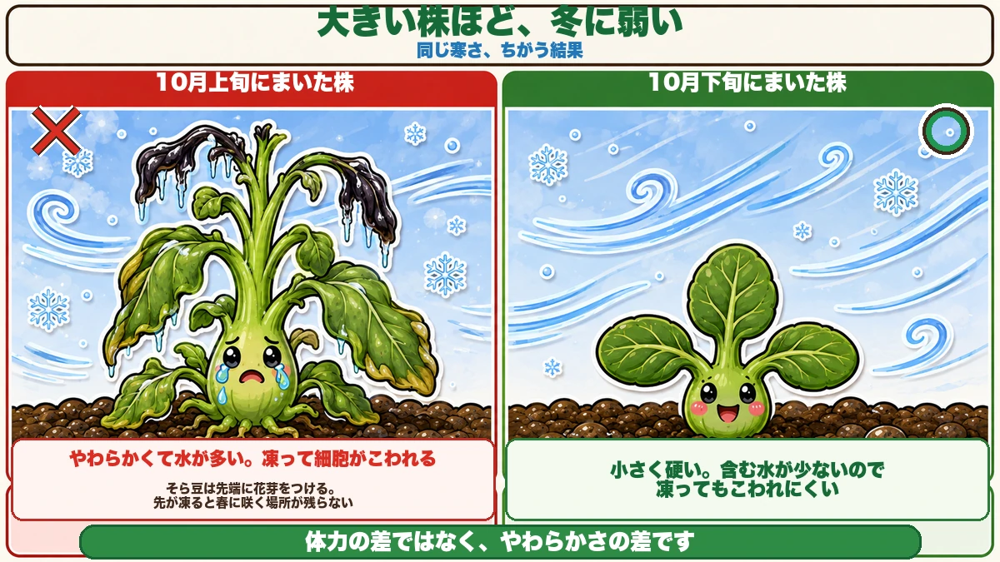
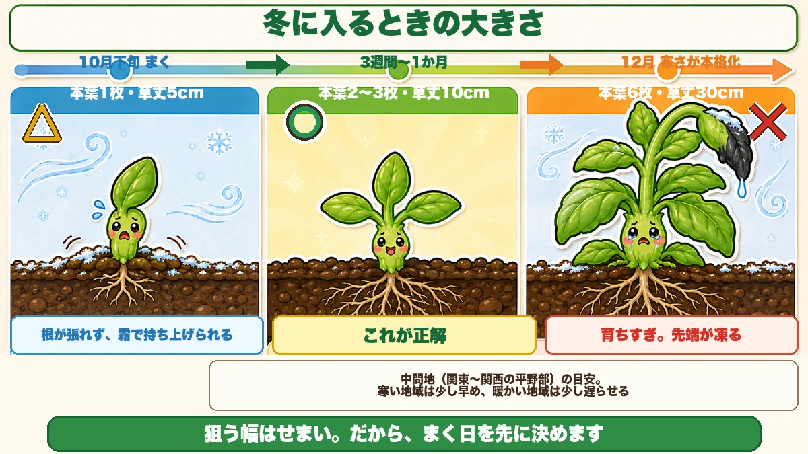
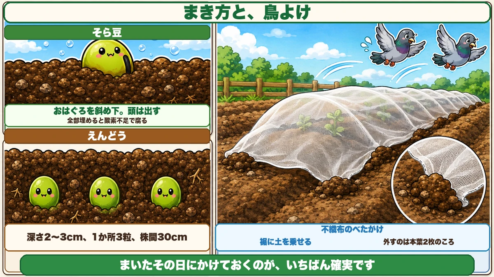

豆は、大きく育てると冬に枯れます わざと遅らせてまく話
「去年まいたそら豆、冬に全部枯れました」
「早くまいたほうが、大きくなっていいと思っていた」
「まいた豆を、鳥に掘り返された」
どうも、8150（えいこう）です🌱 家庭菜園歴8年、理科の教員免許を持っていて、有機・無農薬で野菜を育てています。
今日は、えんどうとそら豆のタネまきです。
先に、この記事でいちばん言いたいことを言っておきますね。
★豆は、大きく育てると冬に枯れます。
「え、逆じゃないの？」と思いますよね。私も最初はそう思っていました。大きいほうが体力があって、寒さに強そうな気がします。
でも実際は反対でした。★小さい株のほうが、冬を越せます。
だから秋の豆は、★わざと遅らせてまきます。今日は、その理由と、いつまくかの決め方をお話しします。
※以下の時期は中間地（関東〜関西の平野部）が目安。寒い地域は少し早めに、暖かい地域は少し遅らせてください。
📖 この記事の目次
なぜ、大きいほうが枯れるのか

理由は「やわらかさ」です
★大きく育った株は、茎も葉もやわらかくて、水をたっぷり含んでいます。
水を含んだものが凍ると、どうなるか。★中の水が凍って体積が増えて、細胞をこわします。凍ったペットボトルがパンパンにふくらむのと同じです。
小さい株は、葉も茎も硬くて、含んでいる水が少ない。★だから凍っても、こわれにくいんです。
さらに、伸びた先はもっと弱い
もうひとつ。伸びた先端の部分は、いちばん新しくてやわらかい場所です。
そら豆は先端に花芽を作ります。★秋のうちに伸びすぎると、その花芽ごと凍って落ちます。春になっても、咲く場所が残っていない。
★育ちすぎた株は、枯れなくても春に実がつかないんです。これがいちばんもったいないパターンです。
答えは「本葉2〜3枚で冬に入る」

この大きさを狙います
覚えるのはこれだけです。
★冬の寒さが本格化する時期に、本葉が2〜3枚。草丈にすると10cmちょっと。
これより小さいと、根が張れずに霜で持ち上げられます。これより大きいと、さっきの話で凍みます。★どっちに外しても失敗するので、幅はせまいです。
だから、逆算してまきます
タネをまいてから本葉2〜3枚になるまで、だいたい3週間から1か月です。
中間地なら、寒さが来るのは12月に入ってから。だから★10月下旬から11月上旬にまく、が答えになります。
私は毎年10月25日ごろにまいています。★カレンダーに丸をつけておくくらいでちょうどいいです。
早くまきたくなる気持ちへ
正直に言うと、10月上旬はまだ暖かくて、「もう畑が空いているのに」と手が動きたくなります。
私も一度、10月10日ごろにまいたことがあります。年内に草丈が30cmを超えて、見た目は立派でした。★でも1月の寒波で、先端が真っ黒になって落ちました。
春に脇から芽が出てはきましたが、収穫は2週間以上遅れました。★あのときの「立派さ」は、ただの育ちすぎでした。
まき方は、深さで決まります

そら豆は「おはぐろを下に、頭を出す」
そら豆のタネには、黒い筋があります。★おはぐろと呼ばれる部分で、ここから根が出ます。
だから、★おはぐろを斜め下に向けて、タネの頭が少し地面から見えるくらいに押し込みます。全部埋めません。
深く埋めると、酸素が足りずに腐ります。そら豆はタネが大きいぶん、水を吸いすぎると傷みやすいんです。
えんどうは、深さ2〜3cm
えんどうはふつうに埋めて大丈夫です。★深さ2〜3cm、1か所に3粒。株間は30cmとってください。
3粒まくのは、発芽しないものがあるからです。全部出たら、あとで1〜2本に間引きます。
水は、まいたあと1回だけ
どちらも、まいたあとに1回たっぷり水をやったら、そのあとは基本やりません。
★土が湿ったままだと、タネが腐ります。豆は乾き気味のほうが、うまく芽を出します。
いちばん多い失敗は、鳥です
豆は、鳥に見つかります
まいた豆を掘り返されるのは、よくある話です。ハトやカラスは、★どこに何が埋まっているか、かなり正確に分かっています。
芽が出て双葉が開くころも危ないです。豆の双葉は分厚くて栄養があるので、そこだけ食べられます。
不織布を1枚かけるだけでいい
対策はかんたんです。★まいたらすぐ、不織布をべたっとかけて、周りに土を乗せておく。
これだけで、まず食べられません。しかも保温にもなるので、発芽が揃います。
★外すのは、本葉が2枚出たころ。それ以降は放っておいて大丈夫です。鳥は、硬くなった葉には興味を持ちません。
肥料は、ほとんど要りません
豆は、自分で肥料を作ります
これが豆のいちばん面白いところです。
★豆の根には、根粒菌という菌が住みつきます。この菌は、空気中の窒素を野菜が使える形に変えてくれます。
つまり★豆は、肥料の主成分である窒素を、自分の根で作れるんです。
だから、入れすぎると失敗する
窒素を自分で作れるところに、さらに窒素肥料を足すとどうなるか。
★葉ばかり茂って、花が咲かなくなります。つるぼけと同じ状態です。
元肥は、うね全体に堆肥を軽く入れる程度でじゅうぶん。★油かすや鶏ふんは、豆には入れないくらいでちょうどいいです。
収穫後の株は、抜かずに切る
もうひとつ。★収穫が終わったら、株元をハサミで切って、根は土に残してください。
根粒菌が作った窒素が、そのまま次の野菜の肥料になります。抜いてしまうと、それを捨てることになります。
学ぶ：豆はなぜ、菌と組んでいるのか🔬
理科の時間です。
空気の約8割は窒素です。★つまり窒素は、そのへんにいくらでもあります。
ところが植物は、空気中の窒素をそのままでは使えません。窒素は2つの原子ががっちり結びついていて、ほどくのにものすごいエネルギーが要るからです。
★根粒菌は、それをほどける数少ない生きものです。
豆は、根に部屋を作って菌を住まわせ、糖分を渡します。菌はお礼に窒素を渡す。★どちらも相手がいないと得をしない関係です。
お子さんと一緒なら、収穫が終わった豆を掘ってみてください。★根に、白やピンクの小さな粒がびっしりついています。それが根粒です。半分に割ると、中がピンク色をしていることがあります。★ピンクなら、その菌はちゃんと働いていた証拠です。
まとめ
ここまで読んでくださって、ありがとうございました。
秋の豆は、まく日をまちがえなければ、あとはほとんど手がかかりません。
- ★大きく育った株ほど、冬に枯れる。やわらかくて水が多いから
- ★狙う大きさは、冬に入る時点で本葉2〜3枚・草丈10cmちょっと
- ★だから中間地では10月下旬から11月上旬にまく
- ★そら豆はおはぐろを斜め下、頭を出して浅く。えんどうは深さ2〜3cmで3粒
- ★水はまいたあと1回だけ。湿ったままだと腐る
- ★まいたらすぐ不織布。鳥の被害はこれでほぼ消える
- ★肥料は入れない。豆は根粒菌と組んで、自分で窒素を作る
- ★収穫後は根を残す。次の野菜の肥料になる
全部やろうとしなくて大丈夫です。まずはカレンダーの10月25日あたりに、丸をひとつつけてください。★秋の豆は、その1日で決まります
次回は、いちごの植え付け。★クラウンを埋めると実がつかない話をします🍓
そら豆のタネ
おはぐろを斜め下に向けて、頭を出して浅く植えます。深く埋めると腐ります。
![[商品価格に関しましては、リンクが作成された時点と現時点で情報が変更されている場合がございます。]](https://hbb.afl.rakuten.co.jp/hgb/56d217e1.4eab06f8.56d217e2.1513a8ec/?me_id=1204270&item_id=10005616&pc=https%3A%2F%2Fthumbnail.image.rakuten.co.jp%2F%400_mall%2Fnikkoseed%2Fcabinet%2Fseeds%2Fssk%2Fsskv1088h4701.jpg%3F_ex%3D240x240&s=240x240&t=picttext "[商品価格に関しましては、リンクが作成された時点と現時点で情報が変更されている場合がございます。]")

スナップエンドウのタネ
深さ2〜3cm、1か所3粒、株間30cm。発芽しないものがあるので多めにまきます。
![[商品価格に関しましては、リンクが作成された時点と現時点で情報が変更されている場合がございます。]](https://hbb.afl.rakuten.co.jp/hgb/552615f0.9cc2855e.552615f1.776f7de9/?me_id=1251188&item_id=10000610&pc=https%3A%2F%2Fthumbnail.image.rakuten.co.jp%2F%400_mall%2Fyonezawa%2Fcabinet%2Ftane01%2F10mame%2Fhorunsnack.jpg%3F_ex%3D240x240&s=240x240&t=picttext "[商品価格に関しましては、リンクが作成された時点と現時点で情報が変更されている場合がございます。]")
不織布
まいたらすぐかけてください。鳥の被害がほぼ消えて、発芽も揃います。
![[商品価格に関しましては、リンクが作成された時点と現時点で情報が変更されている場合がございます。]](https://hbb.afl.rakuten.co.jp/hgb/56bc237a.e97551b1.56bc237b.2513ed10/?me_id=1310260&item_id=10000879&pc=https%3A%2F%2Fthumbnail.image.rakuten.co.jp%2F%400_mall%2Fdiokasei%2Fcabinet%2F007fusyokufu%2F12g%2Fimgrc0092049705.jpg%3F_ex%3D240x240&s=240x240&t=picttext "[商品価格に関しましては、リンクが作成された時点と現時点で情報が変更されている場合がございます。]")
移植ごて
うねを整えるときに。豆は肥料を入れないので、堆肥を軽く混ぜる程度で十分です。

あわせて読みたい